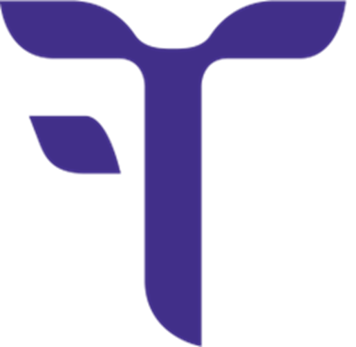
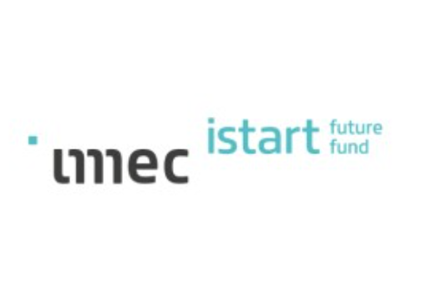
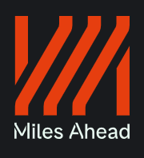
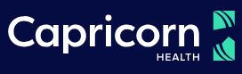

Over ons
COI is een denkgroep die ondernemerschap en initiatieven ondersteunt die zowel innovatief als maatschappelijk relevant zijn voor de uitbouw van de informatiemaatschappij. Projecten moeten aansluiten bij de langetermijndoelstellingen van de Vlaamse overheid en inspelen op verschillende aspecten van digitalisering.
COI verleent financiële steun aan projecten die zich kenmerken door:
- een duurzaam antwoord op maatschappelijke uitdagingen op het vlak van energie, klimaat, welzijn, werk, sociale economie, onderwijs en onderzoek;
- een centrale rol voor ICT en digitalisering;
- een Vlaamse oorsprong.
Projecten
Een overzicht van onze investeringen en participaties sinds 2013.
Vitalink 2013 - 2014
Sponsoring van de business-analyse voor de creatie van een journaal- en logfunctionaliteit.
Hefboom 2015
Aandeelhouder.

Health House 2016
Platform voor communicatie over de toekomst van de gezondheidszorg en de rol van technologie daarin.

Angelwise 2021
Medeoprichter en aandeelhouder van een kapitaalfonds voor innovatieve technologische start-ups.

RDY Ventures 2023
Medeoprichter en aandeelhouder (voorheen Birdhouse Ventures).

F.T.I. bv 2023
Medeoprichter en aandeelhouder voor technologische oplossingen voor maatschappelijke uitdagingen.

imec.istart future fund 2024
Medeoprichter en aandeelhouder ter ondersteuning van veelbelovende start-ups.

Miles Ahead 2024
Aandeelhouder, gericht op vroege-fase softwarestart-ups in Deep Tech en AI.

Capricorn Healthtech Fund II 2025
Medeoprichter van een durfkapitaalfonds voor bedrijven actief in de gezondheidstechnologie.
Historiek
COI (Centrum voor Overheidsinformatiek) ontwikkelde administratieve toepassingen voor overheidsinstanties op nationaal, federaal, lokaal en provinciaal niveau.
Verschillende entiteiten richtten COI nv op. In 2001 werd dit hernoemd tot Ardatis nv. In 2004 fuseerden de entiteiten. In 2006 nam Cegeka Ardatis over, en in 2017 werden de aandelen overgedragen aan GIMV. In 2019 werd het bedrijf geherstructureerd onder een nieuwe naam, met de focus op de ondersteuning van digitale innovatie.
COI participeert in investeringsfondsen die aansluiten bij haar missie en kan rechtstreeks investeren in start-ups of financiële steun verlenen aan initiatieven.
Bestuursorgaan

Pieter Kerremans
Voorzitter

Tim Buyse
Vice-voorzitter

Herman Herpelinck
Vice-voorzitter

Karen Braeckmans
Bestuurder

Guido Deblaere
Bestuurder

Marc Feyten
Bestuurder

René Florizoone
Bestuurder

Eric Schamp
Bestuurder

Bob Van Hooland
Bestuurder

Hedwig Vergeylen
Bestuurder & Algemeen secretaris